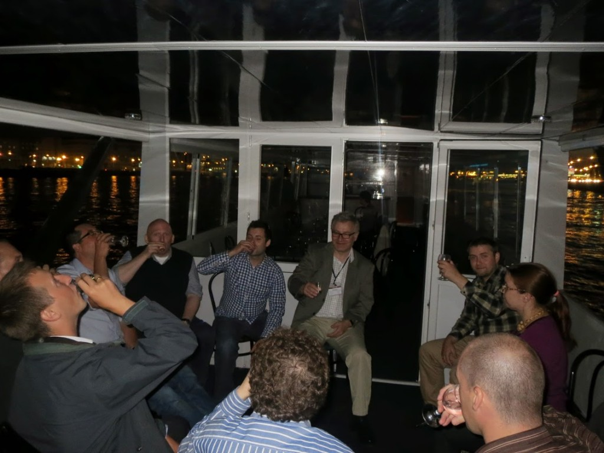

Symposium on Search-Based Software Engineering, August 24-26, 2013
Menu
Skip to content
Home
Conference Program
Impressions from SSBSE2013
Keynotes
SBSE Challenge
Organisation
IMG_0586
← Previous
Next →
